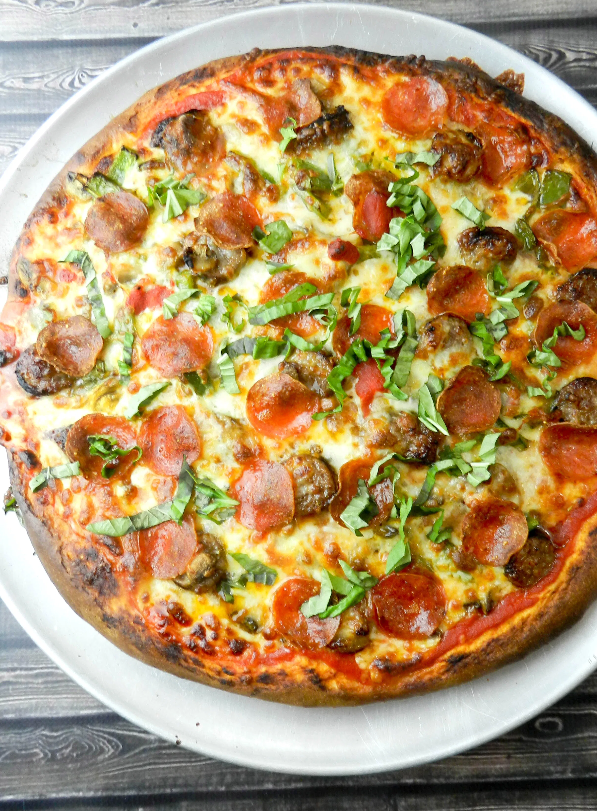

Pizza

Pizza Recipe
Below is the recipe for a pepperoni and mushroom pizza.
Ingredients
- Dough
- Tomato Sauce
- Pepperoni
- Mushrooms
- Basil
- Mozzarella
Steps
- Roll out dough into circular shape
- Apply tomato sauce evenly to dough
- Spread Pepperoni and Mushrooms around dough
- Sprinkle Mozzarella cheese on top
- Cook pizza in 425F pre-heated oven for 12-15 mins or until cheese is bubbling
- Sprinkle basil on top of pizza